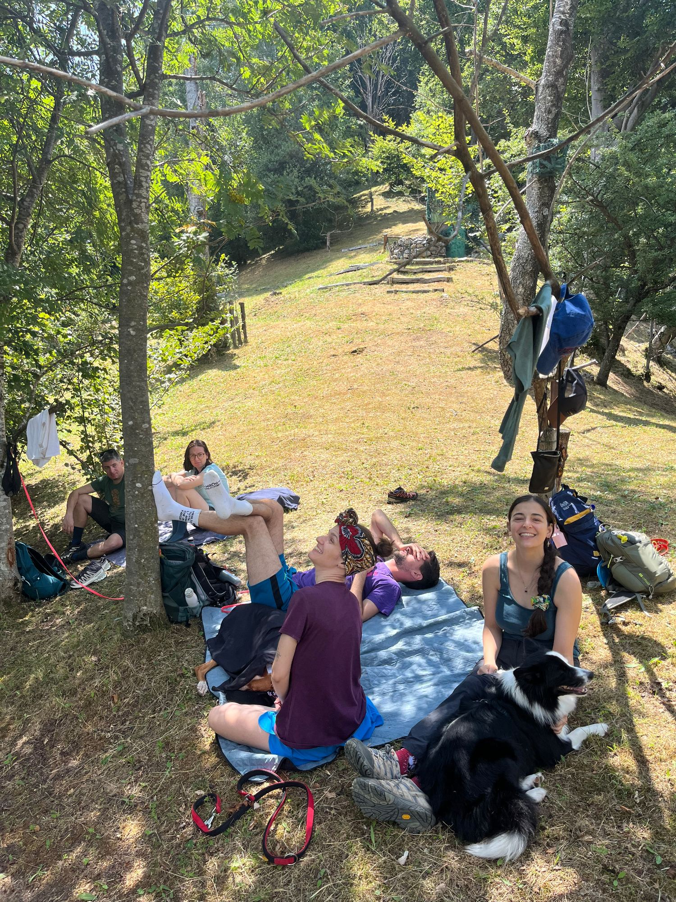
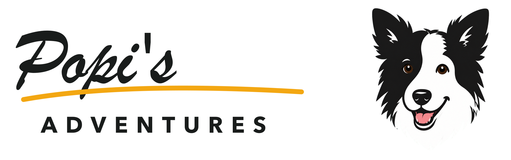
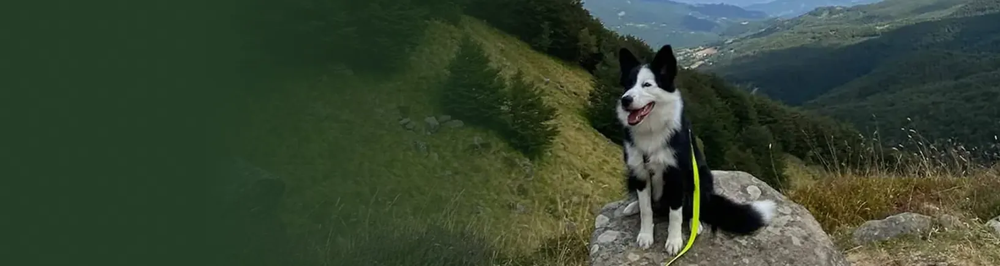

Appennino parmense · 19 luglio 2026
Monte Spedone
12,4 km · 620 m D+ · 4h 10m
Una giornata di vento, crinali e zampe felici.


Sentieri, fotografie e giornate vissute insieme.
Scopri l’ultima avventura
Appennino parmense · 19 luglio 2026
12,4 km · 620 m D+ · 4h 10m
Una giornata di vento, crinali e zampe felici.